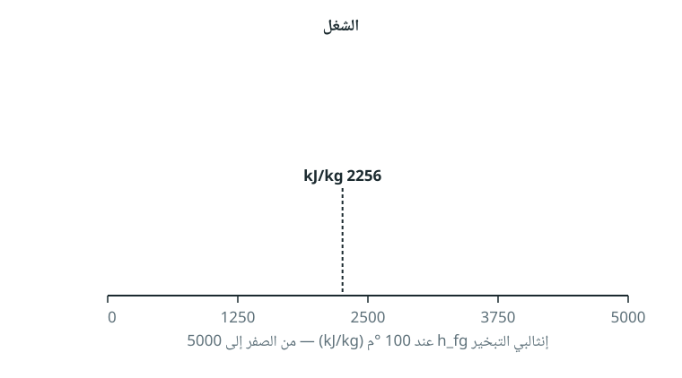

الشغل
Work
الشغل طاقة تنتقل عبر حدود النظام حين تؤثر قوة عبر مسافة. وحدته الجول، وليس خاصية حالة بل يعتمد على المسار.
الشغل شكل من أشكال انتقال الطاقة: يُؤدَّى كلما أثّرت قوة عبر مسافة. يعرّفه Smith وآخرون بالصيغة التفاضلية dW = F dl، ويعرّفه Atkins بأنه يُؤدَّى لتحقيق حركة ضد قوة معاكسة. مثل الحرارة، الشغل طاقة في عبور لا خاصية تُخزَّن في الجسم، ولذلك يعتمد مقداره على المسار الذي سلكه النظام بين الحالتين. مثال: غاز محبوس يدفع مكبساً؛ القوة مضروبة في الإزاحة تعطي الشغل المبذول. وتحذير اصطلاحي مهم: بعض المراجع تعدّ الشغل موجباً إذا بُذل على النظام، وبعضها إذا بُذل من النظام.
كيف تعمل الظاهرة؟
الشغل يُؤدَّى كلما أثّرت قوة على حدود النظام وأزاحت نقطة تطبيقها مسافة. في الغاز المحبوس يتمدد الغاز فيدفع المكبس، فتبذل قوة ضغط مضروبة في مساحة إزاحة، فينتقل مقدار من الطاقة إلى المحيط. وفي العمليات الأخرى يظهر الشغل كهربائياً أو بعمود دوران، لكن التعريف البنيوي واحد: قوة وإزاحة على الحدود.
العلاقة بالأرقام
الشغل في تمدد أو انضغاط شبه ساكن W = ∫p·dV، ووحدته الجول (J). وفي حالة القوة والإزاحة المستقيمة W = F·Δx. ولغاز مثالي في عملية عكوسة عند درجة ثابتة W = n·R·T·ln(V₂/V₁). ولأن التكامل يعتمد على المسار فالشغل ليس خاصية حالة، وقيمته تختلف بين مسارين يصلان الحالتين نفسيهما.
مفاهيم متقاربة
الشغل ليس قوة: القوة مؤثر يقاس بالنيوتن، والشغل طاقة تنتقل تقاس بالجول. وليس قدرة: القدرة معدل بذل الشغل وتقاس بالواط. ويختلف عن الحرارة في الدافع: دافع الشغل قوة وإزاحة منظمة، ودافع الحرارة فرق في درجة الحرارة. وكلاهما طاقة في عبور تعتمد على المسار، بخلاف الطاقة الداخلية التي تعتمد على الحالتين فقط.
حدود التطبيق
اصطلاح الإشارة يختلف بين المراجع، فبعضها يعدّ الشغل موجباً إذا بُذل على النظام وبعضها إذا بُذل من النظام، ونقل معادلة بين اصطلاحين بلا تحويل يقلب النتيجة. ولا يُحسب شغل عند إزاحة عمودية على القوة. وفي العمليات غير العكوسة كالاحتكاك لا يمكن حساب الشغل بـ∫p·dV بل يُقاس من تغيّر الطاقة الداخلية.

| الكمية | القيمة | المصدر |
|---|---|---|
| إنثالبي التبخير h_fg عند 100 °م | 2256.4 kJ/kg | [4] |
المصادر
- 1 Introduction to Chemical Engineering Thermodynamics, 8th ed. — McGraw-Hill (2018). openlibrary.org/api/books?bibkeys=ISBN:9781259696527&format=json&jscmd=data · اطُّلع عليه 2026-11-21
- 2 Atkins' Physical Chemistry, 11th ed. — Oxford University Press (2018). · اطُّلع عليه 2026-11-21
- 3 SI base unit: kelvin (K) — the 2018 revision of the SI — BIPM — Bureau International des Poids et Mesures (2019). www.bipm.org/en/si-base-units/kelvin · اطُّلع عليه 2026-11-21
- 4 NISTIR 5078: Thermodynamic Properties of Water — Tabulation from the IAPWS Formulation 1995 — NIST — National Institute of Standards and Technology (1998). nvlpubs.nist.gov/nistpubs/Legacy/IR/nistir5078.pdf · اطُّلع عليه 2026-11-21
استشهد بهذا المصطلح
الصيغتان مبنيتان من بيانات الصفحة نفسها: العنوان والتاريخ ورابط النسخة المنشورة.
الشغل — Work. (2026). ديوان المعرفة — انفراد. https://infiradev.com/diwan/terms/term-work.html
@misc{term-work2026,
title = {الشغل},
titleaddon = {Work},
howpublished = {{ديوان المعرفة — انفراد} — مرجع علمي عربي},
year = {2026},
url = {https://infiradev.com/diwan/terms/term-work.html},
urldate = {2026-11-25},
note = {مراجعة علمية: فحص التسليم — مراجعة المدير}
}
راجعه: فحص التسليم — مراجعة المدير · 2026-11-25 · آخر تحديث 2026-11-21